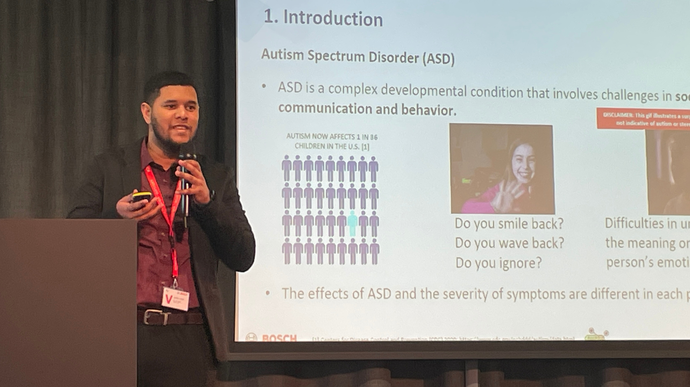
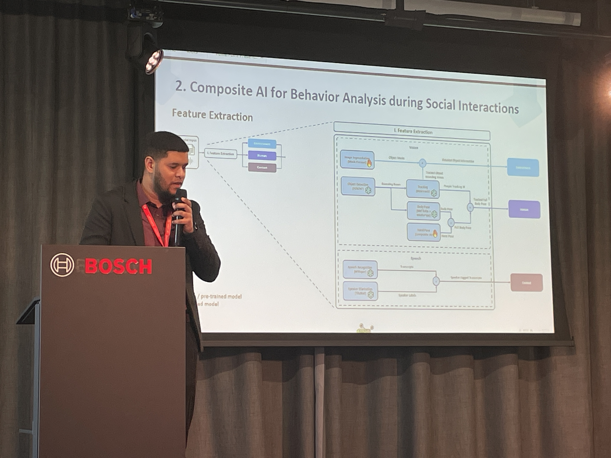

Advancing autismassessmentwith AI.
I develop multimodal AI systems that detect visual, verbal and behavioral markers during standardized autism assessments.

AI · autism assessment · behavior analysis
Current research metrics
Google Scholar and individual publisher records Verified 30 July 2026
Research focus
Behavioral
markers.
Detecting gestures, eye contact, speech and object interactions during standardized autism assessments.
Autism
assessment.
Designing AI methods that support clinicians with consistent, evidence-based behavioral analysis.
Multimodal
AI systems.
Combining computer vision, speech processing and rule-based reasoning to interpret complex interactions.
Publications
A curated record of peer-reviewed papers and conference work.

Multimodal Framework for Automatic Behavior Analysis of Children with Autism During ADOS-2
Cognitive Computation, 17(4), 137
3,397 Springer accesses · 4 Springer citations
View paperExamining Object Play Initiation Delays during ADOS-2 Make-Believe Play Task
International Society for Autism Research (INSAR)
View abstract
Automated Detection of Play Behavior in the ADOS-2 Make-Believe Play Task Using Composite AI
International Society for Autism Research (INSAR)
View abstract
Composite AI for Behavior Analysis in Social Interactions
Companion Publication of the 25th ACM International Conference on Multimodal Interaction
15 Google Scholar citations
View paper
AI Technologies for Machine Supervision and Help in a Rehabilitation Scenario
Multimodal Technologies and Interaction, 6(7), 48
18 Google Scholar citations
View paper
DeepRehab: Real Time Pose Estimation on the Edge for Knee Injury Rehabilitation
International Conference on Artificial Neural Networks (ICANN)
3,129 Springer accesses · 9 Springer citations
View paperNo publications match this filter.
Research profiles
Complete records and platform-specific metrics.
Metrics can differ because each platform indexes and updates research independently. Publisher-level access and citation counts are shown on individual papers where available.